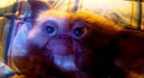

Гремлины

Свиборг в детстве.
Фильм, ставший популярным в Рашке только во второй половине 90-ых. Рассказ идёт о школьнике, который заимел в собственность неведомую зверюшку под названием могвай. Могвай тут же нарекается Гизмой. С ним, кстати, можно делать всё что угодно, но ни в коем случае нельзя выпускать на солнечный свет, иначе он сгорит, мочить водой (иначе он будет размножаться) и кормить после полуночи (иначе он превратится в страшного зверя Гремлина). По итогам фильм изрядно наполнен лулзами и считается на Западе вполне кошерной рождественской сказкой. Также существуют вторая часть фильма (с зачётным троллингом в адрес Дональда Трампа, на 1990 год!) и расовый шотландский ВИА Mogwai. Бытует мнение, что спижжен с расово верного Чебурашки, но на самом деле некий гремлин из Кремля появлялся ещё в винрарном мульте 1944 года компании УорнерБрос. «I'm Gremlin from the Kremlin!». Вот так вот. Непосредственная ссылка на прописку протогремлина, уничтожавшего фошистов, всё равно дает право предположить наличие прямой родственной связи с сожителем крокодила Гены.
IRL, Гремлин — мифическое существо из английского фольклора, озорной проказник, любящий портить механизмы. Алсо, «mogwai» переводится с китайского как «монстр» (главгерой заимел Гизмо именно у китаёз).
Алсо, набор противопоказаний для Могвая подозрительно похож на предъявляемые зверушке, купленной самым первым клиентом (Зоо)магазинчика Ужасов в одноимённой манге, что тоже какбэ намекает.
Кстати, часть декораций к фильму засветились в трилогии «Назад в будущее».